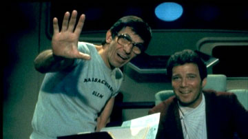
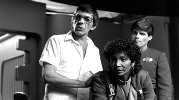

|

STAR TREK III:
THE SEARCH FOR SPOCK
1984


Sinopse
comentada
Comentrios
Citaes
Efeitos
Especiais
Trilha Sonora
Trivia
Ficha
Tcnica
O
DVD
A Morte Tornada
Chance
de Vida
"Jornada nas Estrelas III: Procura de Spock" foi concebido com uma diretriz bastante especfica -- trazer de volta o Vulcano mais amado da galxia. Apesar de essa volta no ter sido planejada em detalhes a priori, os elementos deixados por
"A Ira de Khan" formavam um amlgama impressionante de pistas sobre como seria possvel trazer Spock de volta ao mundo dos vivos.
Por conta disso, e pelo acomodamento natural causado pelo sucesso estrondoso de pblico e crtica gerado pelo segundo filme da srie, a concepo dos detalhes da trama acabou sendo conduzida de forma bastante burocrtica. Alis, todos os processos e as etapas de realizao do filme parecem estar sofrendo desse esprito burocrtico.
"Precisamos trazer Spock de volta? Muito bem, temos de fazer isso, isso e isso. Vamos l." Esse parece o tom que sublinhou o modo de produo do novo filme. A histria rapidamente nasceu das mos de Harve Bennett e Leonard Nimoy, e nenhum dos dois parecia muito disposto a revisitar cada aspecto da trama e corrigir os problemas.

Nimoy estava mais preocupado com sua mais recente vitria, que o levava direto cadeira de diretor. Bennett, por sua vez, ao fracassar na tentativa de trazer Nicholas Meyer mais uma vez a bordo, decidiu tratar a ressurreio de Spock como um embarao pelo qual ele deveria mesmo passar e voltou todas as suas preocupaes para a continuao da srie, o que desembocou na nica parte da trama que parece realmente ter algum fundo dramtico: a "morte" da Enterprise e a introduo da Excelsior.
Levando em conta esses fatores, at de surpreender que "Jornada nas Estrelas III: Procura de Spock" tenha ficado interessante, apesar dos problemas. Infinitamente mais modesto em seu escopo que
"Jornada II", esteve novo filme apenas "fazia o que lhe mandavam" -- trazia Spock de volta.
Por sorte, o planeta Genesis oferece uma forma convincente de ressuscitar o corpo de Spock. J a cena includa durante o final da produo de
"A Ira de Khan", com o Vulcano fazendo um elo mental com McCoy, serviu como gancho perfeito para recuperar sua alma.
Temos um cenrio que permite dar um novo e interessante tratamento ao relacionamento Spock e McCoy. Apesar de sempre reclamar de seu colega frio e calculista, McCoy mostra neste filme o quanto sua ligao com o Vulcano forte e o quanto os dois, a seu modo, so grandes amigos. Tudo isso sempre foi muito bvio desde a srie original, mas sempre interessante vermos esse aspecto tratado de forma direta, como acontece aqui.
Novamente temos um filme que diz que nem tudo so flores no universo de Jornada. Kirk recupera seu melhor amigo, mas perde seu filho e sua nave. A troca tem um peso enorme sobre o ento almirante, e Shatner a faz sentir, no que provavelmente a melhor de suas atuaes no quesito drama.
A qumica entre os personagens continua sendo o forte, e temos bons momentos para Scotty e pelo menos uma boa cena para Uhura e outra para Sulu. Chekov o mais prejudicado pelo roteiro, sendo basicamente esquecido ao longo da histria.
Os problemas que o filme traz so incmodos do ponto de vista tcnico, mas so todos perdoveis aos olhos da audincia. Afinal de contas, sejamos honestos, a nica coisa que no poderia faltar no filme a ressurreio de Spock (evento que, por sua vez, o catalisador de quase todos os furos que vemos no roteiro).
Nimoy se mostra cauteloso na direo, o que ao mesmo tempo reflete sua inexperincia atrs das cmeras e mostra o tom burocrtico da produo. No fosse pelo incndio que quase arruinou o cenrio do planeta Genesis pouco antes de terminarem as filmagens, poucos perceberiam que um novo filme de Jornada nas Estrelas estava terminando de ser rodado na Paramount Pictures.

Apesar desse tom discreto e pouco ousado, "Jornada nas Estrelas III: Procura de Spock" tem importncia fundamental na saga cinematogrfica da srie, por trs razes memorveis. A primeira de ordem financeira. Fica provado que, se voc gastar pouco, pode at fazer um filme medocre que, ainda assim, ter uma excelente margem de lucro.
A segunda a volta do amigo ausente. Os fs no conseguiriam, ao menos naquele momento da histria da franquia, uma
Jornada nas Estrelas sem Spock. Era condio sine qua non para a continuao da srie de filmes e, de um jeito ou de outro, ela foi plenamente contemplada pela premissa de
" Procura de Spock", de forma razoavelmente convicente (ainda que perdida em convenincias, quando olhamos mais de perto).
A terceira, e mais importante, que criou-se a partir de "Jornada nas Estrelas III" um forte senso de continuidade srie de cinema. O mesmo efeito seria obtido no filme seguinte, gerando uma trilogia de eventos interligados e dando uma outra dimenso aos longa-metragens. J no era mais uma srie de episdios, mas um arco em andamento, envolvendo grandes reviravoltas (a nave e um dos principais personagens da srie so perdidos irremediavelmente e depois recuperados) e ocorrncias de importncia crucial (embates diplomticos entre Klingons e federados e a potencial destruio da Terra) no universo fictcio.
S por propiciar esse senso de continuao, " Procura de Spock" j conseguiu fazer mais do que qualquer um dos filmes de
A Nova Gerao, que, por melhores ou piores que fossem, nunca conseguiram transportar para a telona a sensao de que estvamos vendo mais do que um episdio isolado das aventuras da Enterprise.
Que venha "A Volta Para Casa"!